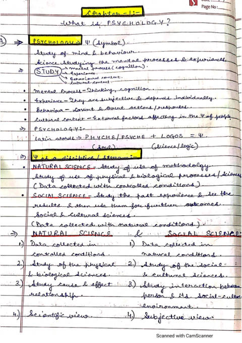
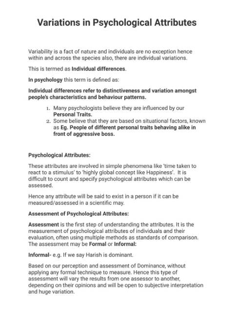
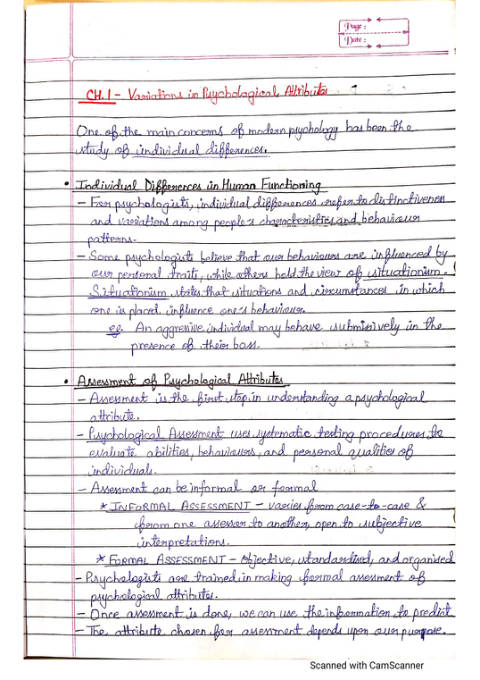

Searching for a psychology teacher near me usually turns up very few options — psychology is a smaller subject, and good tutors are hard to find outside big cities. Lume Live solves that with live online psychology classes: the same experienced teacher and the same study material, whether you live in Delhi, Mumbai, Bengaluru, Jaipur, Lucknow, Rohtak or a small town.
Who will teach you
Classes are led by a psychology educator with 6 years of experience teaching Psychology in CBSE schools — someone who has taught the NCERT chapters year after year, set and checked school exams, and guided students through their Class 12 practical files and board papers. That classroom experience is what shapes every lesson: knowing which concepts students find confusing, how CBSE frames its questions, and what examiners look for in an answer.
Lume Live also has a team of psychology tutors, so we can offer more class timings, one-to-one support and quick doubt-clearing without a long wait. Because Lume Live is a psychology-led counselling practice, the people teaching you work with these ideas every day — not only in the textbook.
What the tuition includes
Chapter-by-chapter teaching from the NCERT textbook, one-to-one or in small batches.
Clear typed and handwritten notes you can revise from the night before an exam.
CBSE previous year questions sorted by chapter, with answers written the way examiners want.
The slides used in class, so diagrams, theories and key terms are easy to revisit.
Chapter tests and full-length papers to the latest CBSE pattern, checked with feedback.
Help with Class 11 and Class 12 practicals, psychological tests and the case profile.
Free sample notes — download now
See the quality of our material before you join. These are real notes from our psychology classes, free to download as PDFs.
Class 11 Psychology

Class 12 Psychology


Chapters we cover
We teach the current NCERT textbooks prescribed by CBSE. Both classes carry a 70-mark theory paper and a 30-mark practical.
| Class 11 Psychology | Class 12 Psychology |
|---|---|
| 1. What is Psychology? | 1. Variations in Psychological Attributes |
| 2. Methods of Enquiry in Psychology | 2. Self and Personality |
| 3. Human Development | 3. Meeting Life Challenges |
| 4. Sensory, Attentional and Perceptual Processes | 4. Psychological Disorders |
| 5. Learning | 5. Therapeutic Approaches |
| 6. Human Memory | 6. Attitude and Social Cognition |
| 7. Thinking | 7. Social Influence and Group Processes |
| 8. Motivation and Emotion | Practical file, psychological tests & case profile |
Who this psychology coaching is for
- Class 11 students taking Psychology for the first time who want a strong base from Chapter 1.
- Class 12 students preparing for CBSE board exams who want to score high in theory and practicals.
- Students whose school has no regular psychology teacher, or who need extra help after school.
- Students preparing for the CUET Psychology domain paper, which follows the NCERT Class 12 syllabus.
- Students from other boards (state boards, ISC) — much of the content overlaps; tell us your board.
- Students planning to become a psychologist who want to start with the right foundation.
How it works
- Message us on WhatsApp with your class, board and the chapters you need help with.
- Pick one-to-one or a small batch and a time that fits around school.
- Start classes online — notes, PYQs and PPTs are shared chapter by chapter.
- Test and revise with chapter tests and sample papers before your exams.
- Taught by a teacher with 6 years of CBSE school classroom experience.
- A team of psychology tutors, so timings are flexible and doubts are answered quickly.
- Complete material: notes, PYQs, PPTs, sample papers and practical file help.
- Online across India — no need to find a psychology tutor in your own city.
Frequently asked questions
Do you teach psychology tuition online for students outside my city?
Yes. All classes are live and online, so a student anywhere in India — Delhi NCR, Mumbai, Bengaluru, Kolkata, Chennai, Jaipur, Lucknow, Rohtak or a small town — gets the same teacher and the same material. You do not need to find a psychology teacher near you.
Who teaches the psychology classes?
Classes are led by a psychology teacher with 6 years of experience teaching Psychology in CBSE schools, supported by the Lume Live team of psychology tutors. Everyone on the team teaches from the NCERT textbook and the current CBSE syllabus.
Which classes and boards do you cover?
Our focus is CBSE Class 11 and Class 12 Psychology, which follows the NCERT textbooks. Because most state boards and ISC share much of the same content, students from other boards are welcome too — tell us your board when you contact us.
What study material do I get?
Chapter-wise notes (typed and handwritten), previous year questions (PYQs) with model answers, PPTs used in class, sample papers and revision sheets, plus guidance for the Class 12 practical file and case profile. You can download free sample notes for Class 11 and Class 12 Chapter 1 on this page.
Is one-to-one psychology tuition available?
Yes. You can choose one-to-one tuition or a small batch. One-to-one suits students who need to catch up or want focused board exam preparation; small batches suit steady, chapter-by-chapter learning. Message us on WhatsApp for current timings and fees.
Does Class 12 psychology tuition help with CUET?
The CUET Psychology domain paper is based on the NCERT Class 12 Psychology syllabus, so strong board preparation covers most of it. We can add MCQ practice for students who are also taking CUET.
Start psychology tuition with Lume Live
Tell us your class, board and the chapters you need help with. We will share timings, fees and the full set of notes, PYQs and PPTs for your class.
Chat on WhatsAppOr call +91 70156 71280 · hello@lumelive.co.in